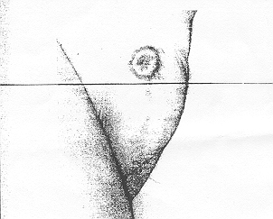
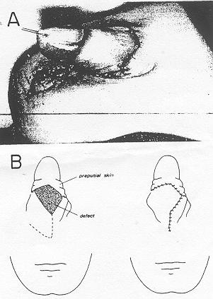

THE CIRCUMCISION REFERENCE LIBRARY
A RARE COMPLICATION FOLLOWING CIRCUMCISION: THE CONCEALED PENIS
From the Department of Plastic and Reconstructive Surgery, Free University Hospital, Amsterdam, The Netherlands
ABSTRACT
A case is reported of a concealed penis, a rare complication of circumcision.
Serious complications of circumcision are unusual considering the frequency with which this operation is performed. The reported complication rate is 0.2 per cent. Hemorrhage and infections are encountered most frequently, followed by loss of penile skin, injury to the glans or penis, circumcision of unrecognized hypospadias, urethral fistula, necrosis of the glans or penis, laceration of penile or scrotal skin, preputial cysts, urinary retention and lymphedema or elephantiasis of the penile skin.1-12 The case reported herein represents a rare complication following circumcision.
CASE REPORT
A two year old Moroccan boy was referred to us because of a penile deformity and difficulty in urination. Circumcision had been done 2 months previously by a Moslem layman, specially “trained” in performing the operation. Soon thereafter the parents noticed that the penis had disappeared, although they were certain that it was not amputated during circumcision.
|  Fig. 1. Photograph 8 weeks after circumcision shows only thick hypertrophic ring of scar tissue and small central sinus. |
Physical examination revealed a healthy, slightly adipose normal boy except for the external genitalia. The penis was not visible but palpation of the pubic area disclosed what appeared to be the shaft of the penis in the subcutaneous tissue. A thick hypertrophic ring of scar tissue surrounded a small sinus, making it impossible to find the urethral meatus (fig.1). The scrotum was normal and contained both testicles.
|  Fig. 2. A, after liberation of penis, penile shaft was covered by preputial skin. B, ventral surface of penis. Skin defect was closed using rotation flap (dotted line shows flap planning. |
With the patient under general anesthesia a vertical incision was made at the caudal side of the circular scar. The glans and penile shaft were found subcutaneously and were tightly adherent to the surrounding tissue. After excision of the hypertrophic scar and repositioning of the penis, sufficient skin was available to cover the penile shaft, except of a small area on the undersurface, which was closed by rotation of scrotal skin (fig. 2). Meatotomy was then performed for correction of a pinpoint meatus.
DISCUSSION
Complications of circumcision are often overlooked or unreported. Probably the most ancient and widely performed operation for religious and medical reasons, circumcision is not only restricted to the medical profession. It is practiced by laymen in Jews, Moslems and different tribes in Africa, America and Australia. Due to a large community of foreign Moslems laborers in The Netherlands several Moslem laymen are practicing circumcision while traveling. Postoperative care is often minimal.
During reconstruction in this case a combination of factors was noted to be involved. Removal of too much preputial skin and the tendency of the penis to retract in the fatty mons pubis, combined with contraction of the circular circumcision wound, forced the penis into a submerged position. The hypertrophic scar formation contributed to secure the glans during circumcision resulted in meatal stenosis. The concealed penis is a rather uncommon complication of circumcision, which is mainly due to poor technique and lack of experience.
REFERENCES
1. Andrews, R. J., Miller, J. L. and Rest, M. M.: Circumcision in a general dispensary. Mil. Med., 146: 880, 1981.
2. Byars, L. T. and Trier, W. C.: Some complications of circumcision and their surgical repair. Arch. Surg., 76: 477; 1958.
3. Gee, W. F. and Ansell, J. S.: Neonatal circumcision: a ten-year overview with comparison of the Gomco clamp and the Plastibell device. Pediatrics, 58: 824, 1976.
4. Izziden, A. Y.: Successful replantation of a traumatically amputated penis in a neonate. J. Ped. Surg., 16: 202, 1981.
5. Lau, J. T. K. and Ong, G. B.: Subglandular urethral fistula following circumcision: repair by the advancement method. J. Urol., 126: 702, 1981.
6. Procopis, P. G. and Kewley, G. D.: Complication of circumcision. Med. J. Aust., 1: 1982.
7. Menahem, S.: Complications arising from ritual circumcision: pathogenesis and possible prevention. Israel J. Med Sci., 17: 45, 1981.
8. Scurlock, J. M. and Pemberton, P. J.: Neonatal meningitis and circumcision. Med. J. Aust. 1: 332, 1977.
9. Shulman, J., Ben-Hur, N. and Neuman Z.: Surgical complications of circumcision. Amer. J. Dis. Child., 107: 149; 1964.
10. Sterenberg, N., Golan, J. and Ben-Hur, N.: Necrosis of the glans penis following neonatal circumcision. Plast. Reconstr. Surg., 68: 237; 1981.
11. Sussman, S. J., Schiller, R. P. and Shashikumar, V. L.: Fournier’s syndrome. Report of three cases and review of the literature. Amer. J. Dis. Child, 132: 1189, 1978.
12. Woodside, J. R.: Necrotizing fasciitis after neonatal circumcision. Amer. J. Dis. Child., 134: 301, 1980.
http://www.cirp.org/library/complications/kon1/